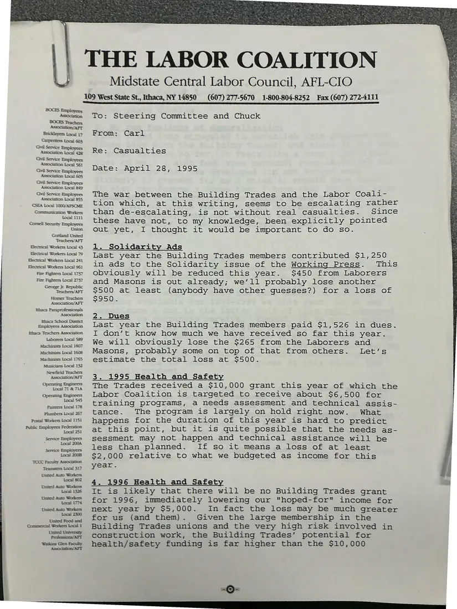
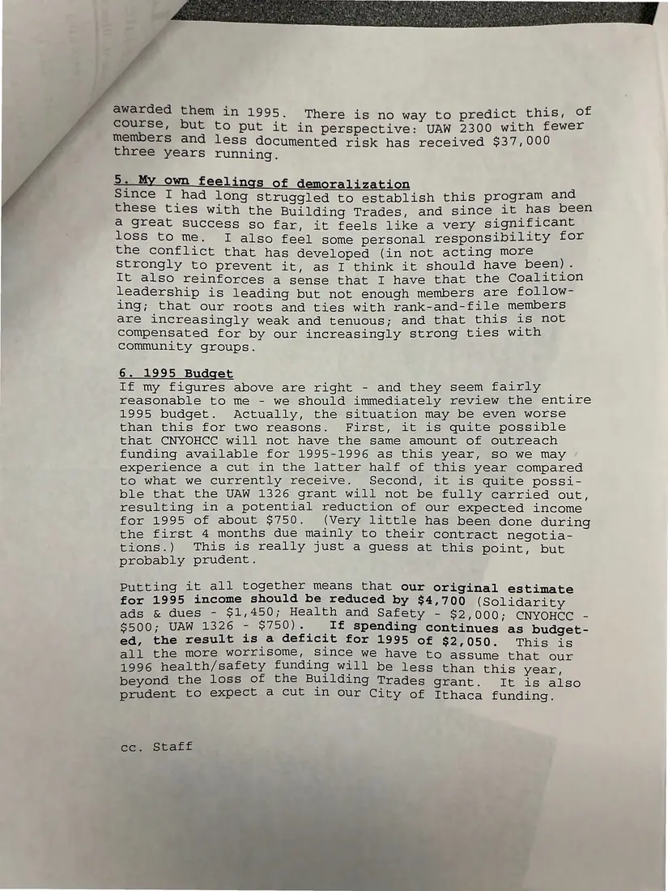

Memorandum, 2 pages
Memo: “Casualties” of the conflict between the Building Trades and the Labor Coalition
April 28, 1995
A staff memo to the Steering Committee and Chuck on the costs of an escalating conflict with the Building Trades: lost solidarity ads, dues, and health and safety funding. It closes with a revised 1995 budget projecting a deficit and the writer's own “feelings of demoralization.”
Download or cite this itemPages


(open zoom view)Read the page text (machine-read, mostly readable)
This text was generated automatically from the photograph and has not been corrected. The image is the authoritative record.
Bricklayers Local 17 Carpenters Local 603 Civil Service Employees Association Local 428 Civd Service Employees Association Local 561 Gvil Service Employees Civil Service Employees Association Local 549 Gival Service Employees Association Local 855 CSEA Local 1000/AFSCME Communication Workers Local 1232 Comell Securty Employees Union Corland United ‘Teachers/AFT Biectrical Workers Local 43 Electrical Woskers Local 79 Electrical Workers Local 241 Biectrical Woskers Local 961 Fire Fighters Local 1737 Fire Fighters Local 2737 George jr. Republic Teachers/AFT Homer Teachers Rthaca Paraprofessionals. Association 3 be School Distr: ithace Teachers Assocation Laborers Local 589 Machinists Local 1607 Machinists Local 1608 Machinists Local 1765 Musicans Local 132 Newfield Teachers Operating Engincers Local 71 & JIA Local $45 Paimers Local 178 Phambers Local 267 Posta! Workers Local 1251 Local 251 Service Employees - Local 200A. 109 West State St., Ithaca, NY 14850 THE LABOR COALITION Midstate Central Labor Council, AFL-CIO (607) 277-5670 1-800-804-8252 Fax (607) 272-4111 To: Steering Committee and Chuck From: Carl Re: Casualties Date: April 28, 1995 The war between the Building Trades and the Labor Coali- tion which, at this writing, seems to be escalating rather than de-escalating, is not without real casualties. Since these have not, to my knowledge, been explicitly pointed out yet, I thought it would be important to do so. 1. Solidarity Ads Last year the Building Trades members contributed $1,250 in ads to the Solidarity issue of the Working Press. This obviously will be reduced this year. $450 from Laborers and Masons is out already; we’ll probably lose another $500 at least (anybody have other guesses?) for a loss of $950. 2. Dues Last year the Building Trades members paid $1,526 in dues. I don’t know how much we have received so far this year. We will obviously lose the $265 from the Laborers and Masons, probably some on top of that from others. lLet’s estimate the total loss at $500. 3. 1995 Health and Safety The Trades received a $10,000 grant this year of which the Labor Coalition is targeted to receive about $6,500 for training programs, a needs assessment and technical assis- tance. The program is largely on hold right now. What happens for the duration of this year is hard to predict at this point, but it is quite possible that the needs as- sessment may not happen and technical assistance will be less than planned. If so it means a loss of at least $2,000 relative to what we budgeted as income for this year. 4. 1996 Health and Safety It is likely that there will be no Building Trades grant for 1996, immediately lowering our "hoped-for" income for next year by $5,000. In fact the loss may be much greater for us (and them). Given the large membership in the Building Trades unions and the very high risk involved in construction work, the Building Trades’ potential for health/safety funding is far higher than the $10,000


(open zoom view)Read the page text (machine-read, mostly readable)
This text was generated automatically from the photograph and has not been corrected. The image is the authoritative record.
ye awarded them in 1995. There is no way to predict this, of y course, but to put it in perspective: UAW 2300 with fewer members and less documented risk has received $37,000 three years running. 5. My own feelings of demoralization Since I had long struggled to establish this program and these ties with the Building Trades, and since it has been a great success so far, it feels like a very significant loss to me. I also feel some personal responsibility for the conflict that has developed (in not acting more Strongly to prevent it, as I think it should have been). It also reinforces a sense that I have that the Coalition leadership is leading but not enough members are follow- ing; that our roots and ties with rank-and-file members are increasingly weak and tenuous; and that this is not compensated for by our increasingly strong ties with community groups. 6. 1995 Budget If my figures above are right - and they seem fairly reasonable to me - we should immediately review the entire 1995 budget. Actually, the situation may be even worse than this for two reasons. First, it is quite possible that CNYOHCC will not have the same amount of outreach funding available for 1995-1996 as this year, so we may experience a cut in the latter half of this year compared to what we currently receive. Second, it is quite possi- ble that the UAW 1326 grant will not be fully carried out, resulting in a potential reduction of our expected income for 1995 of about $750. (Very little has been done during the first 4 months due mainly to their contract negotia- Elous”)eelhis sis) reallly justeaygquesstatethvcmpoint) but probably prudent. Putting it all together means that our original estimate for 1995 income should be reduced by $4,700 (Solidarity ads & dues - $1,450; Health and Safety - $2,000; CNYOHCC - $500; UAW 1326 - 3750) .. Tf Spending continues as budget- ed, the result is a deficit for 1995 of §2,050. This is all the more worrisome, Since we have to assume that our 1996 health/safety funding will be less than this year, beyond the loss of the Building Trades grant. It is also prudent to expect a cut in our City of Ithaca funding. cc. Staff
See something wrong, or recognize a person or event? Send a correction. If you hold rights in this item or think it should not be public, write to the same address.